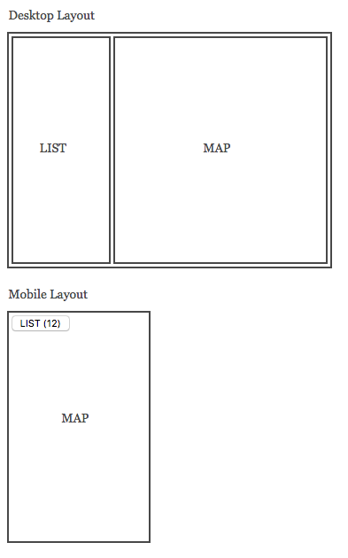

Traffic Map
A local traffic authority needs a solution to display
traffic incidents on a map. A simple browser based interface is
required to display incident locations and information each about each
incident.
JSON Feed
The traffic incidents are published in a JSON feed which contains
data about the incident type, description, location details etc. This
is live data and usually contains 300-400 items. You can assume this is
the maximum number of items your solution needs to support.
https://victraffic-api.wd.com.au/api/v3/incidents
Requirements
Build a small single page JS application that has the following features:
- Displays the incidents on an interactive map. Each incident in
the feed should be displayed on the map with a marker. The user must be
able to pan and zoom the map to explore incidents in a particular area.
You can choose which map library to use.
- When a user clicks an incident marker some basic information is
shown. The following incident details are required to be displayed:
alert_type, title, description. This information should be presented in
a pop-up element that can be dismissed by the user.
- Displays incidents in a list. As the user pans and zooms the map
interface the incident list needs to be updated to show only the
incidents currently visible on the map. Each list element needs to
display the alert_type and title of the incident.
UI Requirements
The application needs to implement a responsive layout to support both desktop and mobile devices.
- When in desktop mode the list and map should be both on-screen
- When in mobile mode the map should be on-screen and the list is accessible by a button or similar element.
- When in mobile mode the button to access the list should display the number of list elements in the button label

Expectations
- We require the application code and any build instructions.
- There are no time limits on the test, but please indicate approximately how
long you spent on it.
- You are not expected to apply any specific styling but please apply some basic CSS
to ensure the interface elements are pleasantly presented.
- You may use any frontend framework & build tool or just plain JS.